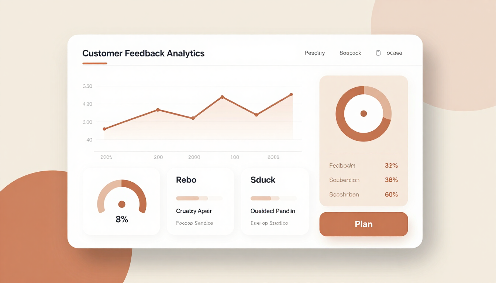
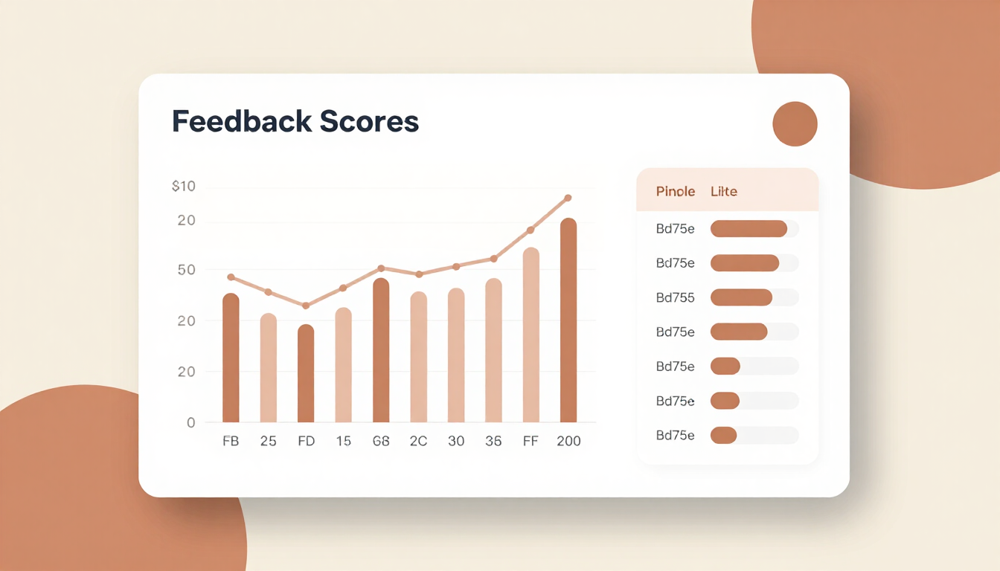
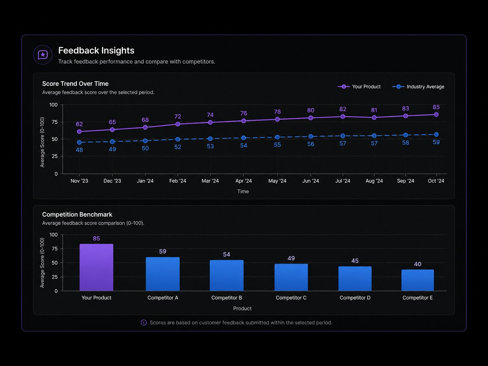
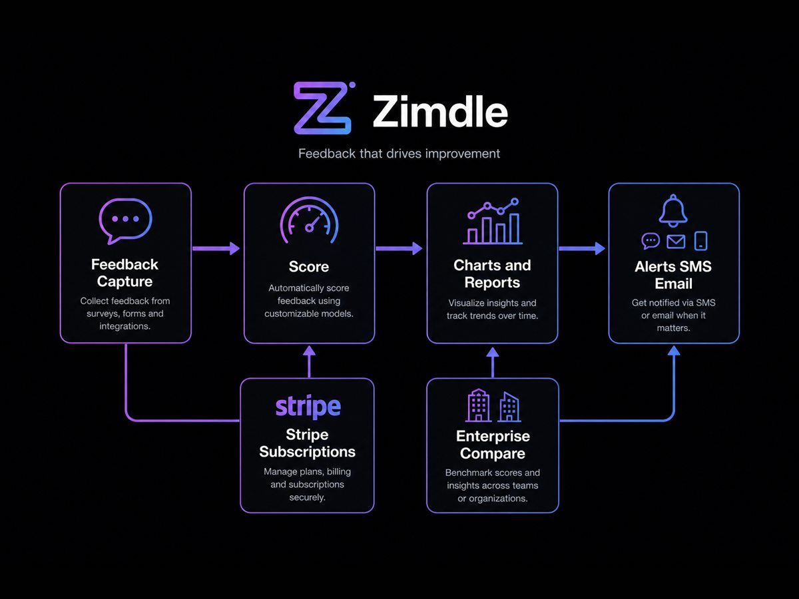
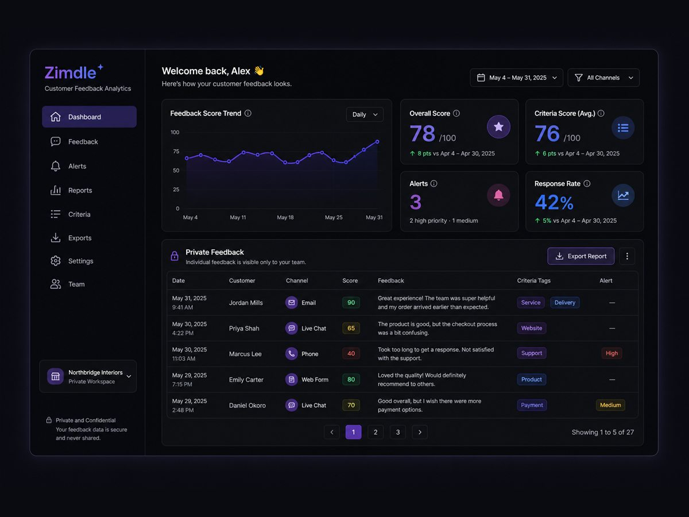

Zimdle.
Private customer feedback and performance monitoring SaaS. Helping business owners collect private reviews, analyze multi-criteria trends, generate automated PDF reports, and automate Stripe recurring subscriptions.

Illustrative Zimdle customer feedback and analytics dashboard — representative sample data.Private operational signals instead of social media blowback.
Public review sites frequently deliver delayed, angry, and unfiltered customer reactions when it is already too late for operators to intervene. Zimdle was engineered to provide structured, private customer feedback and proactive performance monitoring so business managers can identify service friction and resolve customer complaints before they escalate into public social reviews.
The system connects frontline customers with company decision-makers through lightweight survey widgets, automated scoring algorithms, real-time alerting triggers, and executive benchmarking summaries.
Full-Stack SaaS Implementation
As full-stack developer, I engineered the application core, billing automation, dashboard telemetry, and real-time notification workers.
- Architected a structured private feedback workflow that captures customer inputs and safely routes them to authorized company representatives.
- Constructed interactive dashboard analytics: response timelines, criteria-specific averages, rolling date-range charts, and competitor benchmarks.
- Implemented automated PDF report generation, queued email digests, and immediate SMS dispatch for critical low-satisfaction ratings.
- Shipped Stripe subscription billing supporting full customer lifecycles (subscribe, tier change, pause/resume, cancel) protected by Laravel middleware.
- Delivered a responsive AJAX-driven UI for survey template customization, criteria weights, location profiles, and multi-branch enterprise comparison.
Engineering Private Signal & Billing
- Private AJAX Aggregation: Feedback data had to remain strictly private to business owners while dynamically powering trend lines, criteria breakdowns, and peer comparisons without exposing raw survey submissions to unauthorized viewers.
- Stripe Subscription Lifecycle: Four full lifecycle actions — subscribe, plan change, resume, and cancel — operate behind custom subscription middleware. Tier-locked features like PDF exports and enterprise comparison had to gate gracefully without interrupting in-flight survey collection.
- Actionable Operator Alerts: Low-satisfaction scores trigger Twilio SMS and email dispatch, backed by queued DomPDF summary jobs for managers outside the web portal. Alerts needed smart throttling to eliminate notification fatigue.
Customer Signal to Operator Action.
A lightweight capture widget feeds responses into scoring controllers, generating interactive AJAX visualizations, scheduled PDF summaries, and Twilio SMS escalations.
Product Loop: Verified path from feedback capture endpoints, aggregation controllers, DomPDF compilations, and Twilio SMS alerts.
Core SaaS Capabilities
Stripe Cashier & Plan Middleware
The platform’s recurring commercial engine is backed by Laravel Cashier and Stripe:
- 4 Subscription States: Seamless handling of initial checkout, mid-cycle tier changes, temporary payment pauses, and self-serve cancellations.
- Feature Entitlement Gates: Custom route middleware dynamically verifies subscriber standing before allowing access to advanced charting and PDF reports.
- Webhook Synchronization: Automated listening for Stripe failed payment events, customer invoice reminders, and credit card renewal prompts.
Automated Reporting Engine
Engineered background processes to deliver insights directly to stakeholders:
- DomPDF Document Generator: Server-side rendering of print-ready executive summaries with embedded SVG performance charts.
- Twilio SMS Emergency Alerts: Instant text messaging triggered when a customer leaves a critical rating, allowing same-day resolution.
- Tenant Isolation: Strict multi-business database boundaries ensuring complete data confidentiality across competing merchants.
Interfaces Built for Customer Intelligence.




Technology & Tooling.
Full-stack SaaS delivery across structured private feedback collection, analytics, reporting, and operational alerting. Includes 4 Stripe subscription lifecycle actions with plan middleware protection. Business owners gain genuine private signals to resolve customer issues proactively.